Website resmi Organisasi Siswa Intra Sekolah SMP Negeri 36 Makassar. Mewujudkan siswa yang disiplin, kreatif, berprestasi, serta berjiwa kepemimpinan.
SelengkapnyaOrganisasi tidak dapat berjalan tanpa adanya suatu proses perencanaan, pengorganisasian, pengarahan dan pengendalian kerja para anggota organisasi serta menggunakan seluruh sumber daya organisasi untuk mencapai tujuan yang telah ditetapkan atau lebih sering dikenal dengan istilah manajemen organisasi.
Salah satu kegiatan utama manajemen organisasi adalah perencanaan. Sebuah organisasi tidak dapat berfungsi dengan baik tanpa adanya suatu perencanaan. Karena perencanaan adalah langkah pertama yang harus di lalui dalam suatu organisasi. Dalam hal ini, kepengurusan OSIS Periode 2026-2027 melakukan atau menjalani penindakan administratif yang pertama yaitu perencanaan atau yang disebut dengan Rapat Kerja.
Dengan demikian diharapkan kepengurusan yang baru benar – benar mampu mengembangkan progam kerja yang efektif, efisien, dan actionable, serta sangat di butuhkan siswa/i UPT SPF SMP Negeri 36 Makassar.
Mewujudkan OSIS SMPN 36 MAKASSAR yang menjunjung tinggi disiplin sebagai kunci meraih sukses serta menciptakan lingkungan sekolah yang positif.
Membiasakan sikap disiplin dalam setiap kegiatan sekolah.
Melatih jiwa kepemimpinan siswa.
Mendorong siswa meraih prestasi akademik dan non-akademik.
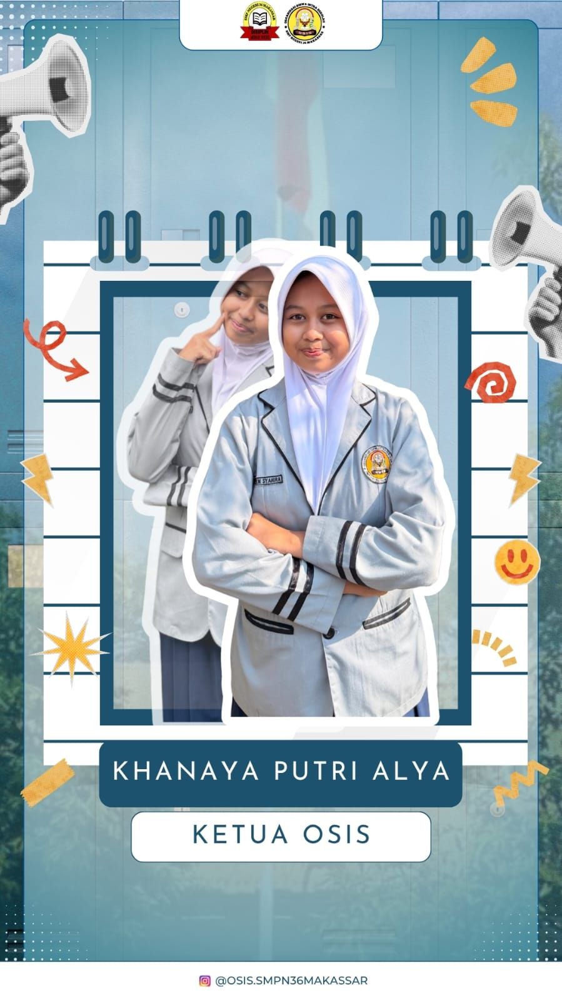
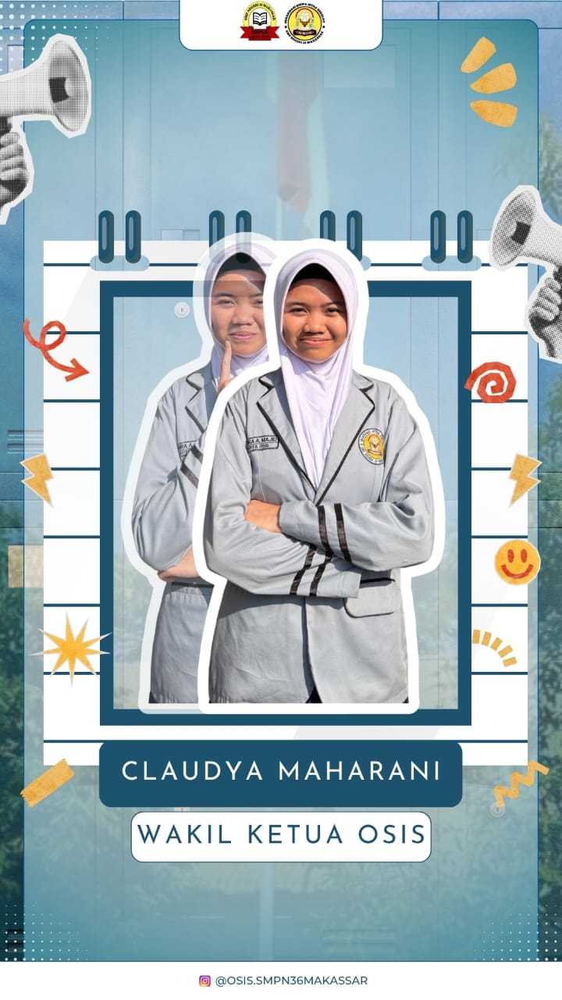
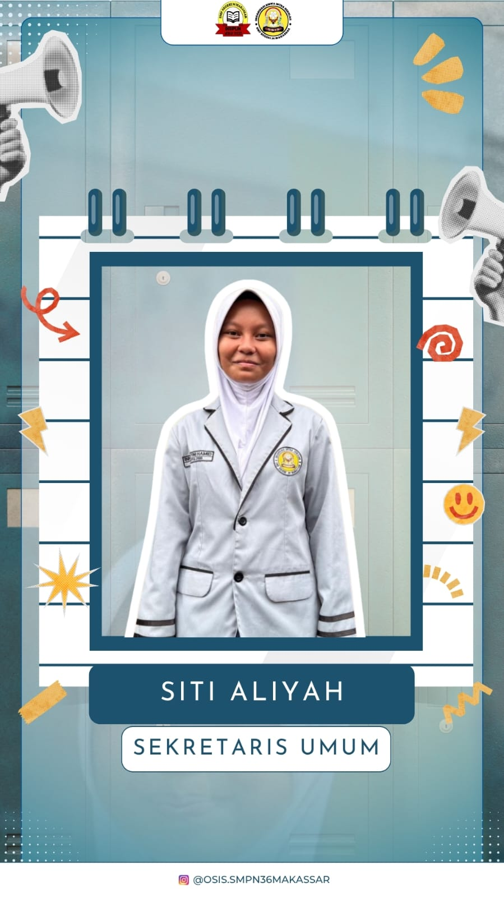
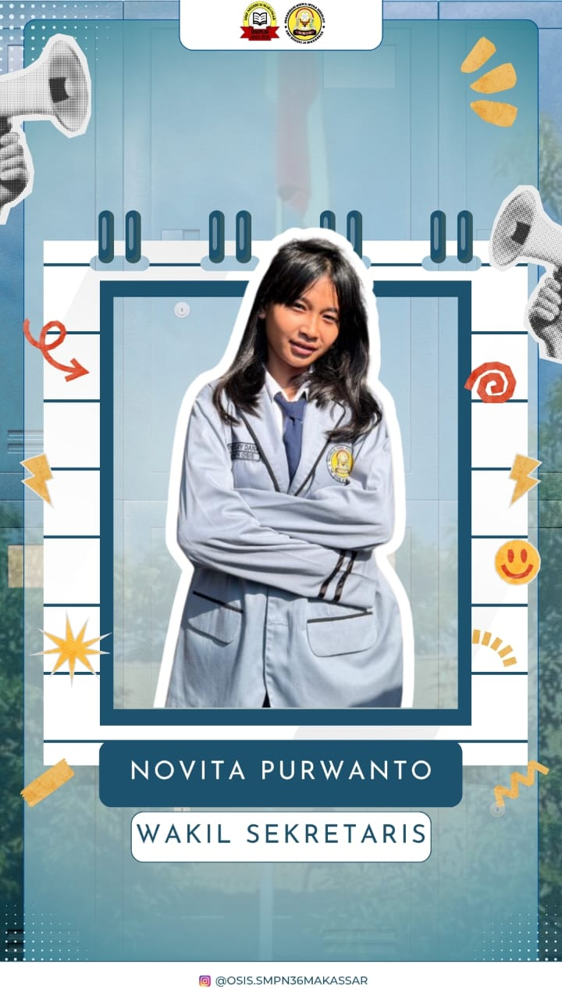
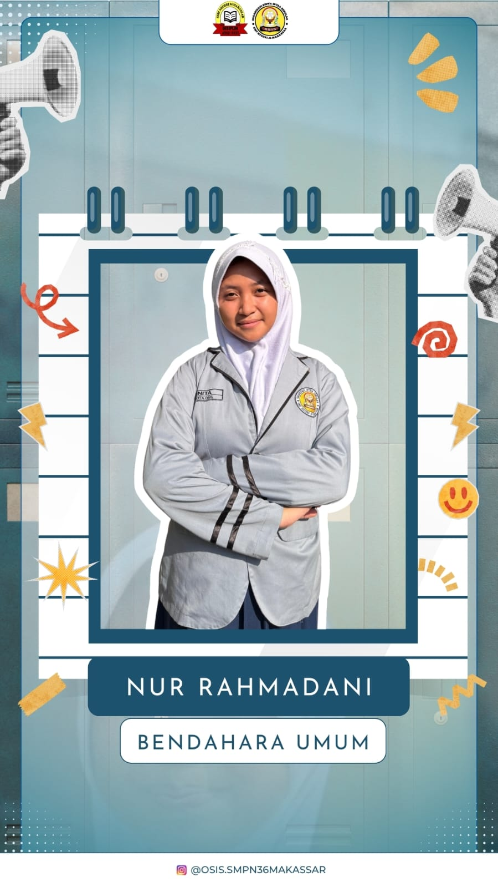
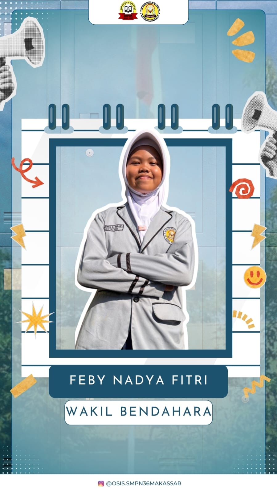
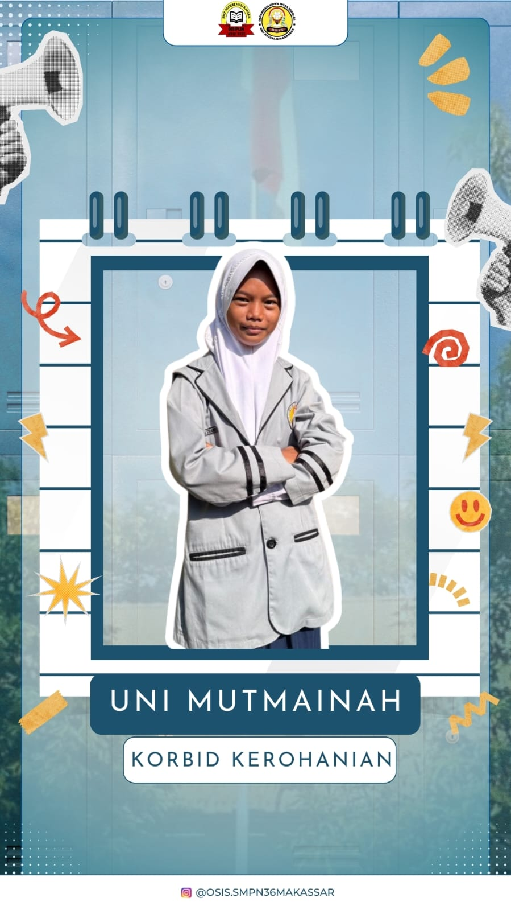
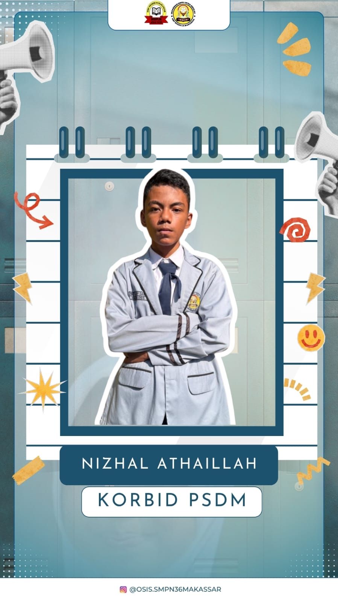
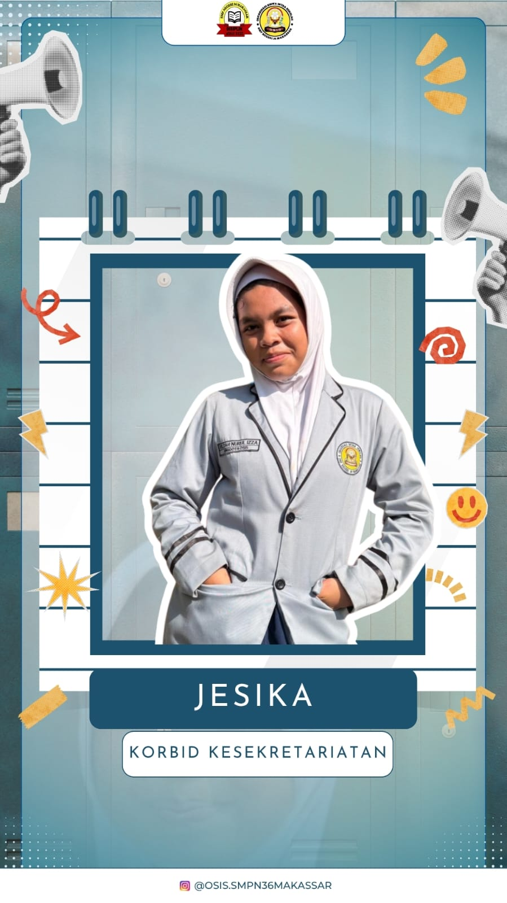
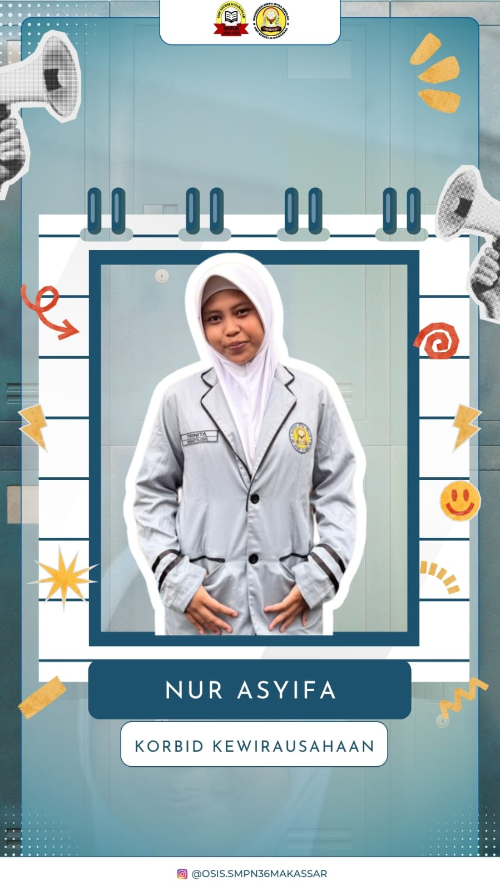
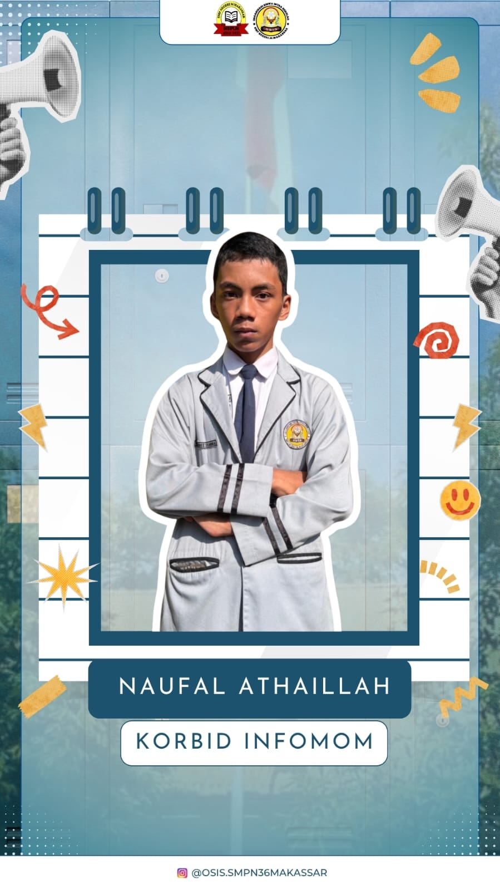
Jika ada pertanyaan atau ingin menghubungi OSIS SMP Negeri 36 Makassar, silakan melalui kontak berikut:
Email: osissmpn36mksr@gmail.com
Instagram: @osis.smpn36makassar